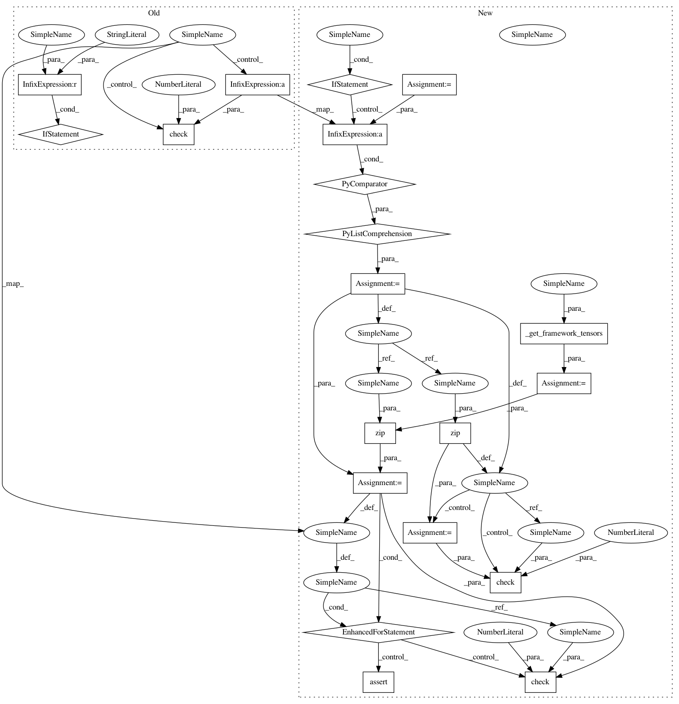

f6bd12eb18056ea0ca0364b6e458f96ec0ff7585,rllib/utils/schedules/tests/test_schedules.py,TestSchedules,test_polynomial_schedule,#TestSchedules#,40
Before Change
power=2.0)
for fw in framework_iterator(frameworks=["tf", "tfe", "torch", None]):
fw_ = fw if fw != "tfe" else "tf"
polynomial = from_config(config, framework=fw_)
for t in ts:
out = polynomial(t)
t = min(t, 100)
check(out, 0.5 + (2.0 - 0.5) * (1.0 - t / 100)**2, decimals=4)
def test_exponential_schedule(self):
ts = [0, 5, 10, 100, 90, 2, 1, 99, 23]
config = dict(initial_p=2.0, decay_rate=0.99, schedule_timesteps=100)
After Change
def test_polynomial_schedule(self):
ts = [0, 5, 10, 100, 90, 2, 1, 99, 23, 1000]
expected = [
0.5 + (2.0 - 0.5) * (1.0 - min(t, 100) / 100)**2 for t in ts]
config = dict(
type="ray.rllib.utils.schedules.polynomial_schedule."
"PolynomialSchedule",
schedule_timesteps=100,
initial_p=2.0,
final_p=0.5,
power=2.0)
for fw in framework_iterator(
frameworks=["tf2", "tf", "tfe", "torch", None]):
polynomial = from_config(config, framework=fw)
for t, e in zip(ts, expected):
out = polynomial(t)
check(out, e, decimals=4)
ts_as_tensors = self._get_framework_tensors(ts, fw)
for t, e in zip(ts_as_tensors, expected):
out = polynomial(t)
assert fw != "tf" or isinstance(out, tf.Tensor)
check(out, e, decimals=4)
def test_exponential_schedule(self):
decay_rate = 0.2
ts = [0, 5, 10, 100, 90, 2, 1, 99, 23]
expected = [2.0 * decay_rate**(t / 100) for t in ts]
In pattern: SUPERPATTERN
Frequency: 3
Non-data size: 20
Instances
Project Name: ray-project/ray
Commit Name: f6bd12eb18056ea0ca0364b6e458f96ec0ff7585
Time: 2020-07-30
Author: sven@anyscale.io
File Name: rllib/utils/schedules/tests/test_schedules.py
Class Name: TestSchedules
Method Name: test_polynomial_schedule
Project Name: ray-project/ray
Commit Name: f6bd12eb18056ea0ca0364b6e458f96ec0ff7585
Time: 2020-07-30
Author: sven@anyscale.io
File Name: rllib/utils/schedules/tests/test_schedules.py
Class Name: TestSchedules
Method Name: test_exponential_schedule
Project Name: ray-project/ray
Commit Name: f6bd12eb18056ea0ca0364b6e458f96ec0ff7585
Time: 2020-07-30
Author: sven@anyscale.io
File Name: rllib/utils/schedules/tests/test_schedules.py
Class Name: TestSchedules
Method Name: test_polynomial_schedule
Project Name: ray-project/ray
Commit Name: f6bd12eb18056ea0ca0364b6e458f96ec0ff7585
Time: 2020-07-30
Author: sven@anyscale.io
File Name: rllib/utils/schedules/tests/test_schedules.py
Class Name: TestSchedules
Method Name: test_linear_schedule